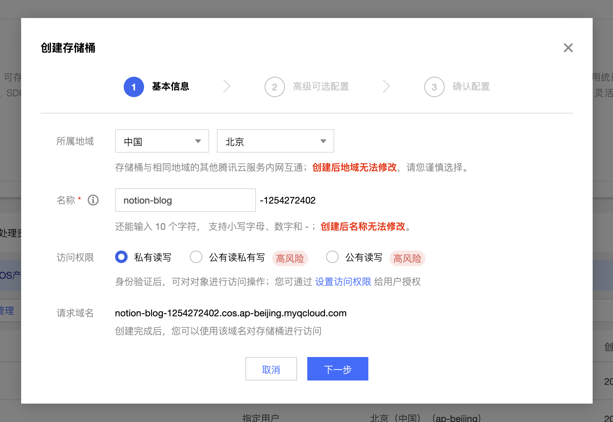
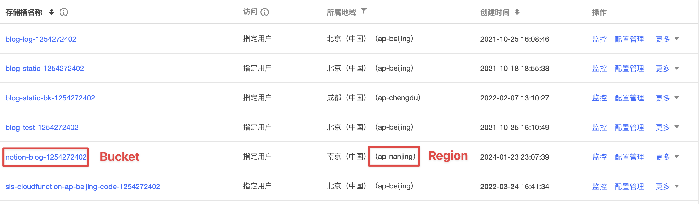
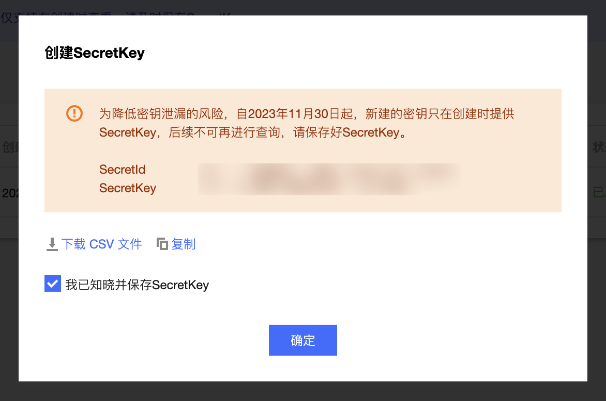

Tencent Cloud COS
Cloud Object Storage (COS) is a distributed storage service launched by Tencent Cloud. It has a non-hierarchical directory structure, no data format restrictions, and can accommodate massive data with support for HTTP/HTTPS protocol access. Tencent Cloud COS has no capacity limit for storage buckets, no need for partition management, and is suitable for various scenarios such as CDN data distribution, data processing, or data lakes for big data computing and analysis. For the official website, please visit Tencent Cloud COS.
Tip
If you already have a storage bucket for storing blog images, you can skip this section and go directly to the later section on Getting Storage Buckets and Regions. If you do not have Tencent Cloud OSS service, you need to first purchase. My configuration is China Mainland General, charged by storage capacity, standard storage, 10G, 1 year, and an additional data processing resource pack for "traffic-100G/year" type, with a total cost of 20.12 yuan per year.
Creating a Storage Bucket
Go to the Tencent Cloud Console COS Bucket page, click on "Create Bucket," and keep the access permissions set to "Private Read/Write," which will be later configured for CDN access. Set other configurations according to your specific needs:

Then, proceed with the steps and click "Create."
Getting Storage Buckets and Regions
Storage bucket and region are two important concepts in COS, and object storage is isolated by "bucket" units.
Go to the COS Bucket page, and in the list below, you will find the storage bucket you just created with its name and region:

In the image, notion-blog-1254272402 is the bucket name, and ap-nanjing is the region name. Note down this information, as it will be used later in the plugin configuration.
Getting SecretId and SecretKey
Go to the Tencent Cloud Key Creation Interface, click on "Create Key," and then record the SecretId and SecretKey from the pop-up box.
Note
Note that this SecretKey will only appear once, so be sure to save it promptly.

Tip
If you are using a master account (the default account), the SecretId and SecretKey you create will have the highest level of permissions. If leaked, there will be a certain security risk.
If you want a more secure configuration, you can use sub-accounts for authorization, and the COS service needs to authorize sub-accounts for read and write permissions. For specifics, please refer to Tencent Cloud documentation.